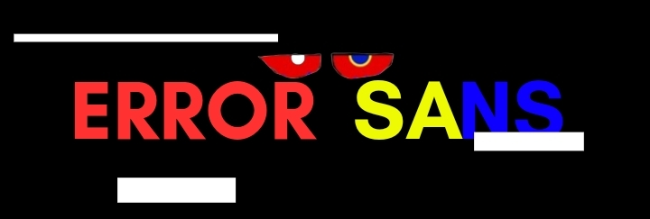

Error
Sa
ns
Undertale : Last Corridor

Science
Sans
Starting Cutscene
The Charas Were Brought To
Science
Sans Map
A Portal Opens Up and the strings Grabbed
Science
Sans Soul
The Strings Will Follow Wherever The
Science
Sans Moves
Information
* You Check,
Science
Sans
ATK 2 DEF 0
*
Science
Sans Is Not Willing To Fight...
*
Science
Sans Damage Has Been Lowered By 15% !
* Get Rid Of This Nerd, We Have Our Prime Target Waiting.
Data
Science
Sans, Trying To Figure Out How The Strings Is Able To Control Him
Karmic Retribution : No
Stamina : 165
Stamina Gain Rate : Does Not Gain Stamina
Lore
Science
Sans Was Repairing A Mini MTT, When Suddenly He Hears Static From The Other Side Of the Lab, When He Went To Check It Out, He saw Humans,
Science
Sans Is Confused As To The Fact There Are Humans in the underground, When Suddenly Something Grabbed Him From Behind And Now
Science
Sans Is Unable To Control Himself
Available Attacks
1st Move
( Dual Blaster )
(6 stamina cost)
(CD : 4s)
2nd move
( Bone Rush )
(8 stamina cost)
(CD : 2.5s)
3rd Move
( Laser Wall )
(8 stamina cost)
(CD : 10s)
Fire 2 blasters at the mouse Cursor, Lingers For 3s And Would Explode after
Fire a barrage of Blue And White bones at the mouse cursor.
A Big Wall Of Lasers That Moves Foward ,It Has 2 different function, Blue Laser : Stand still, Red Laser : You Can't Enter Through
4th Move
( 5 Mini MTT )
(8 stamina cost)
(CD : 25s)
5th Move
( Chemistry Knowledge )
(10 stamina cost)
(CD : 14s)
6th Move
( Telecommand )
(TBA stamina cost)
(CD : TBA)
Summons 5 Mini MTT That Shoot White,Blue, and Orange Bullets.
Gives A Random Flask Which Is Acid Flask, Slow Flask Or Boost Flask
50-50 chance Of Giving You A Shield or Blaster Barrages That Are Autoaimed
7th Move
( Assist )
(0 stamina cost)
(CD : 40s)
Error
Will Send An Attack With Equal Chances Of Variants
Variant 1
Error
Summons 4 Portal Randomly Around The Map Shotting out 5 Bones Per Portal
( Damage : 5hp Per Bone )
Variant 2
Error
Summons A Portal Stretching Side To Side Of the Sans Side Corridor And Brought out 3 Blaster That Shoots Short-Burst beams At A random Chara
( Damage : 14Hp )
Variant 3
Error
Would Force
Science
To Shoot His Dual Blaster , But Before Exploding Error Would Throw The Blasters To The Nearest Chara, Exploding On impact
( Direct Hit Damage : 22Hp )
/th>
Ways To Defeat The Puppets
The Charas Can Attack
Science
Sans Directly To Kill Him Once He ran Out Of stamina
Or Attack The Strings Behind
Science
Sans/The strings in the portal In order to free Him( The Strings Takes 6 Hit Of Damage before breaking )
After You Will Fight Error Again
Short Cutscene ( Rewards For Freeing The Sans Instead Of Killing )
" Thanks Kid, That Was Kinda An Interesting Situation "
" Here, This Should Help You Out "
(
Science
Sans Proceed To Give Each Of The Charas A Random Flask )
Flask Explained
Acid Flask
The Charas Could Throw the acid flask, direct hit would deal 12 stamina and would not leave a puddle, but if miss A Puddle would form dealing 6 Stamina
( Puddle Only Stays For 3s )
Slow Flask
The Charas Could Throw the Slow flask, direct hit would Make Error -5 Speed For 5s and would not leave a puddle, but if miss A Puddle would form dealing -3 speed
( Puddle Only Stays for 3s )
Boost Flask Flask
The Charas Could Consume The Flask Giving +2 speed and Increased m1s speed for 4s
Error
Sa
ns